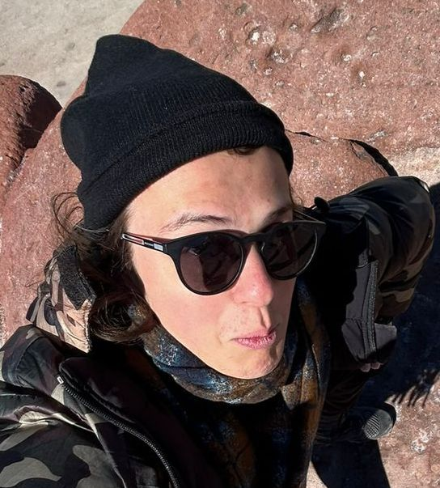
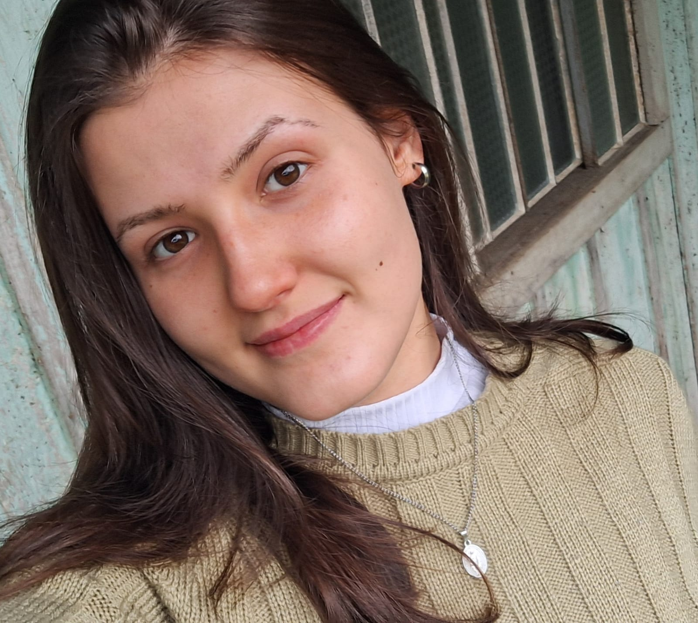
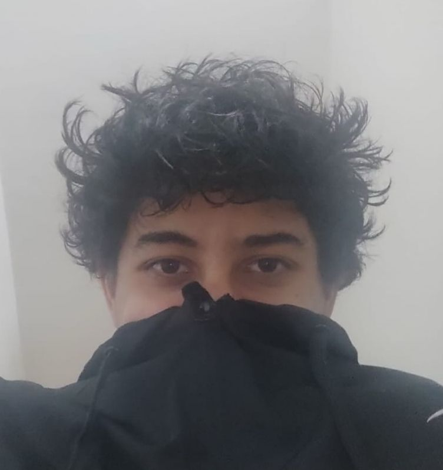
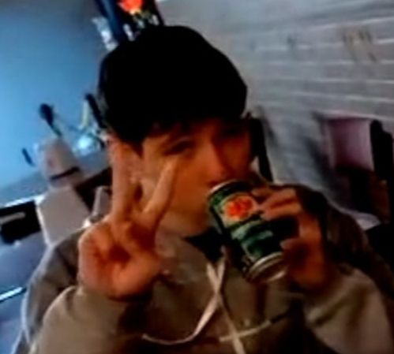

Quem Somos
A Paisagem Urbana nasceu com o propósito de aproximar as pessoas da natureza, produzindo itens de jardinagem acessíveis e sustentáveis. Nosso trabalho começou como uma iniciativa acadêmica e se transformou em um projeto que combina criatividade, consciência ecológica e amor pelo verde.
Missão
Incentivar o cuidado com o meio ambiente por meio de produtos sustentáveis e acessíveis.
Visão
Ser referência em sustentabilidade urbana e produção artesanal consciente.
Valores
Criatividade, empatia, colaboração e responsabilidade ambiental.
Nossa Equipe

Murilo Andrade Gandin
- Página Inicial
- Página Sobre Nós
- Página Perguntas Frequentes

Nicole França Kancelarovicz
- Página Produtos
- História da Empresa

Erick Rafael Mendes
- Página Filosofia
- Formulário de Feedback
- Reciclagem

Gabriel dos Santos Beutler
- Página ONU/ODS
- Página Encomendas
Esse site foi desenvolvido como parte do projeto da disciplina de Desenvolvimento Web do curso Engenharia de Software da Universidade Positivo, com o objetivo de aplicar os conceitos trabalhados em aula.